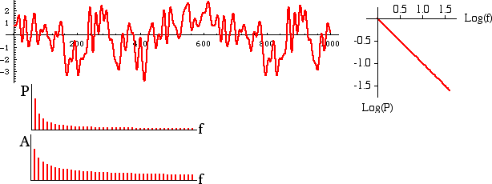

| In terms of power spectra, 1/f noise
is intermediate between white noise and
Brownian noise. |
| Here are a sample of 1/f noise, its power spectrum, and plots of power and
amplitude against frequency. |
|  |
| Many natural processes exhibit power spectra with 1/f characteristics.
Among the examples are |
| * voltage fluctuations in almost all electronic components, |
| * time fluctuations in everything from hour glasses to atomic clocks, |
| * traffic flow on interstates, |
| * the annual flooding levels of the Nile, |
| * voltages across the membranes of your nerves, |
| * and even information patterns stored in DNA. |